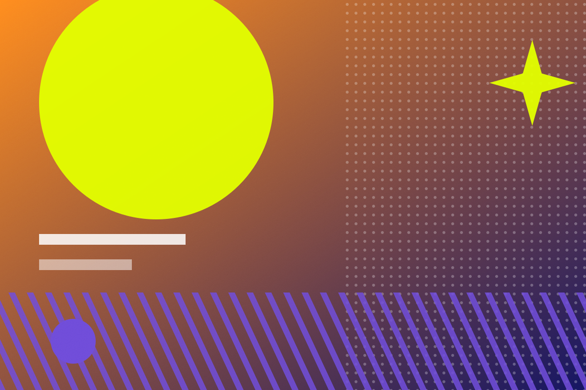
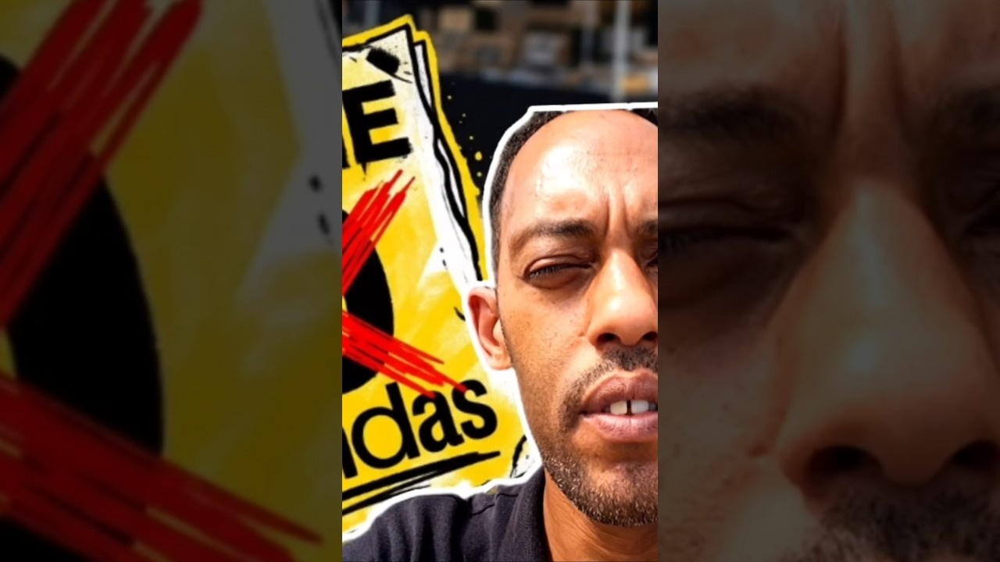
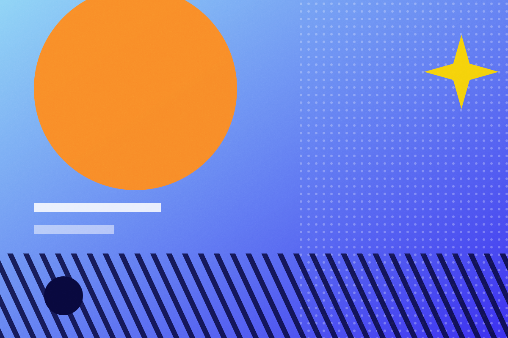
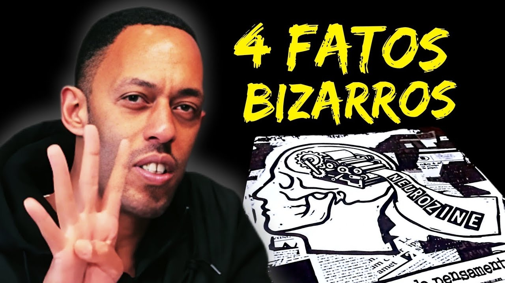

Conteúdo Autoral
Textos, ensaios, quadrinhos e colagens assinados por quem cria — sem intermediários e sem pauta imposta.
Fanzine é um espaço para quem cria, compartilha e vive a arte, a música e as ideias que movem a cena independente.
Nossa história
O Jardim Ângela é muito mais do que um bairro. Sua história é marcada pela resistência, pela esperança e pela capacidade de transformação de uma comunidade que enfrentou grandes desafios ao longo dos anos. O que antes era conhecido por suas dificuldades tornou-se um exemplo de superação graças à força de seus moradores, projetos sociais, iniciativas culturais e ações coletivas que ajudaram a construir uma nova realidade.
Ao longo dessa trajetória, a comunidade fortaleceu seus laços, incentivou a educação, valorizou a cultura e transformou espaços em oportunidades para novas gerações. Cada conquista foi resultado do esforço conjunto de pessoas que acreditaram no poder da união e da participação social.
Hoje, o Jardim Ângela é reconhecido por sua diversidade, riqueza cultural e espírito comunitário. É um território vivo, criativo e inspirador, onde histórias de luta se transformam em exemplos de esperança, mostrando que mudanças reais acontecem quando as pessoas trabalham juntas por um objetivo comum.
Nossa história continua sendo escrita todos os dias por moradores, artistas, educadores, líderes comunitários e jovens que acreditam em um futuro melhor. Mais do que um lugar, o Jardim Ângela é um símbolo de transformação, pertencimento e orgulho para todos que fazem parte dessa caminhada.
Fanzine nasceu da necessidade de publicar sem pedir licença. Somos uma publicação colaborativa que reúne artistas, coletivos, músicos e escritores independentes na mesma página — física e digital. Cada edição é construída em conjunto, com curadoria aberta, liberdade editorial e crédito para quem faz.
Textos, ensaios, quadrinhos e colagens assinados por quem cria — sem intermediários e sem pauta imposta.
Encontros mensais, mutirões de impressão e revisão coletiva: a revista é feita em roda, não em escritório.
Nenhuma pauta é fechada. Você propõe, experimenta e publica — inclusive o rascunho que ninguém quis ver.
Rede de coletivos, selos, rádios livres e ateliês que sustentam a cena fora do circuito comercial.
Feiras, oficinas, festivais e mostras organizados pela própria comunidade. Entrada gratuita, sempre.
Cinquenta bancas de zines, gravuras, fitas e camisetas no pátio da antiga fábrica. Leve dinheiro trocado e uma troca na mochila.

Duas horas para montar seu primeiro zine: dobra, corte, cola e fotocópia. Sai daqui com oito páginas impressas na mão.

Três dias de murais coletivos, lambe-lambe, serigrafia ao vivo e shows de rua. O festival termina com um zine impresso no local.

Exposição de capas originais, projeções de curtas feitos em fotocópia e roda de conversa com editores independentes.
Quem escreve, ilustra, imprime, dobra e distribui. Sem a comunidade, não existe edição.
Colaboradores desta edição

Bia Nunes ColagemDepoimentos
“Publiquei minha primeira história aos dezessete anos num zine grampeado na esquina. Hoje coordeno uma oficina que já imprimiu mais de duas mil páginas.”
“A rede FANZINE abriu portas que nenhuma gravadora abriu: distribuição, público e liberdade para gravar exatamente como a gente quer.”
“Entrei para aprender encadernação e fiquei pela comunidade. É o tipo de lugar onde ninguém pergunta se você tem currículo.”
Participantes
Fale com a gente
Uma revista feita por gente, responde por gente. Escolha o canal certo e fale direto com quem cuida.
Curadoria e coordenação editorial
Responsável pela linha da revista e pelo primeiro contato com quem quer publicar. Escolha esta pessoa para dúvidas sobre conteúdo, curadoria ou colaborações.
Dúvidas sobre a revista, colaborações e todas as formas de participar.
contato@fanzine.comColetivo Papel Cru — Rua do Congo, 148, Vila Izabela, Belo Horizonte/MG, 30480-110.
Ver no mapa